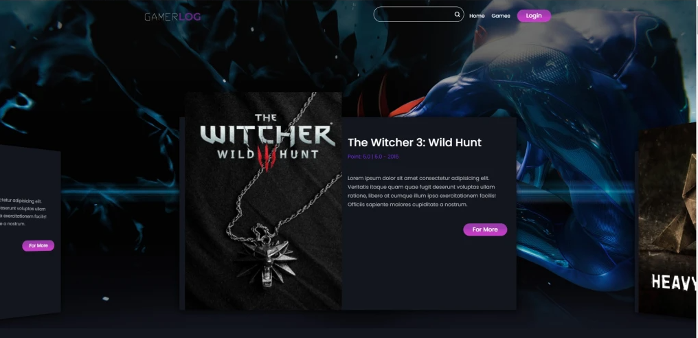
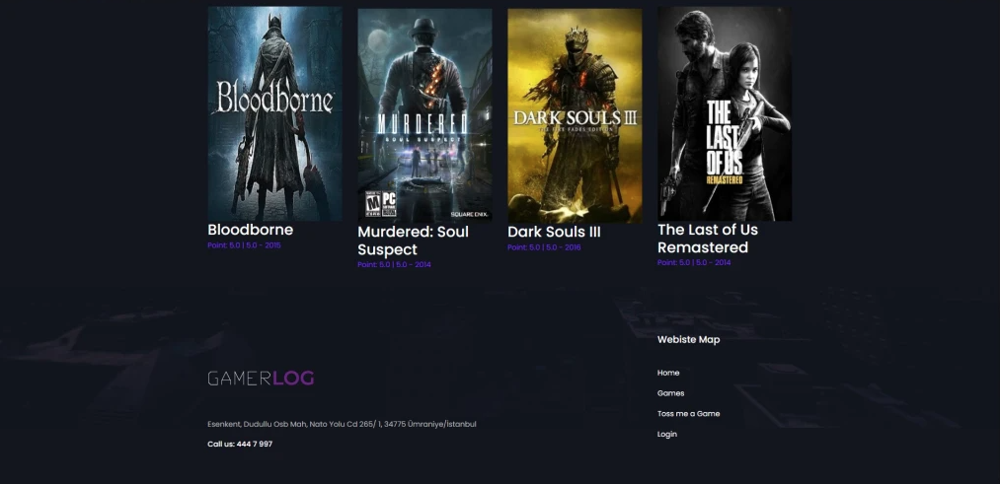
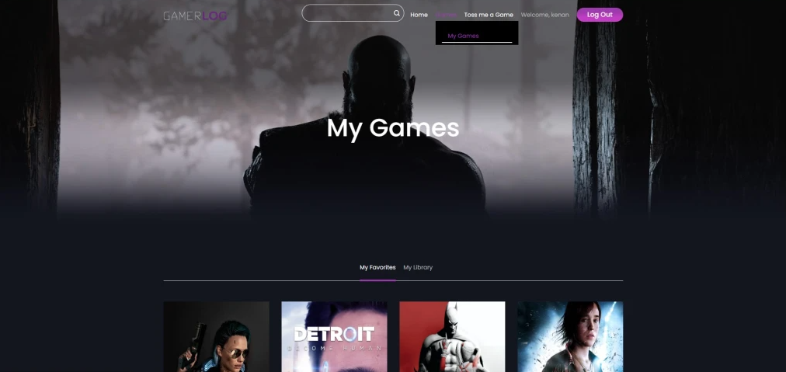
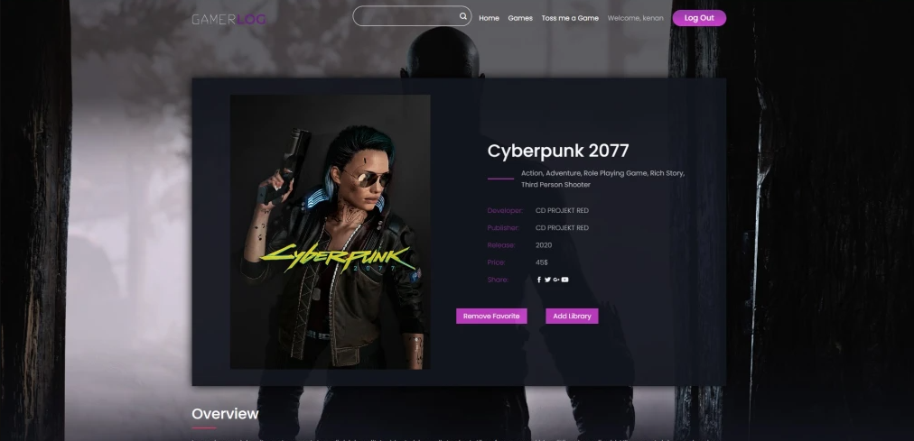
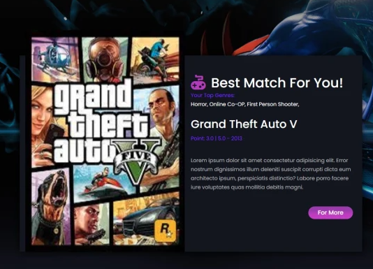
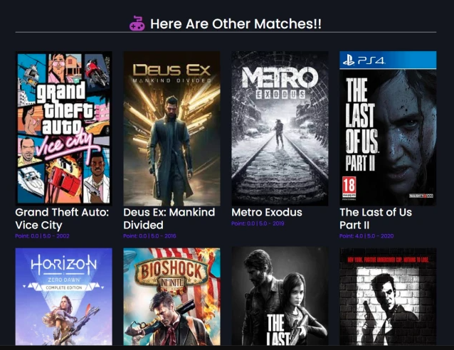

GAMERLOG: PREDICTIVE RECOMMENDATION ENGINE
Django-Powered Full-Stack Platform with Collaborative Filtering Matrix Factorization
TELEMETRY SCREENSHOTS






PROJECT OVERVIEW
GamerLog is an advanced data-processing ecosystem designed to synthesize personalized recommendations from multi-dimensional user behavior. Built on top of Python and Django, the system ingests user cataloging data and applies SVD (Singular Value Decomposition) Matrix Factorization alongside KNN clustering via the Surprise machine learning framework.
ARCHITECTURE & DATA PIPELINES
Engineered a robust, end-to-end cloud pipeline deployed on AWS. Real-time telemetry feeds update user preference vectors dynamically, while asynchronous background tasks re-train matrix weights to deliver instant, high-precision recommendations through a responsive web interface.
KEY TECHNICAL HIGHLIGHTS
- Predictive Machine Learning: Matrix Factorization algorithms engineered with NumPy and SciPy.
- Automated ETL Ingestion: Continuous extraction pipelines ingesting external catalog metadata.
- AWS Infrastructure: Scalable deployment utilizing cloud database hosting and automated security rules.